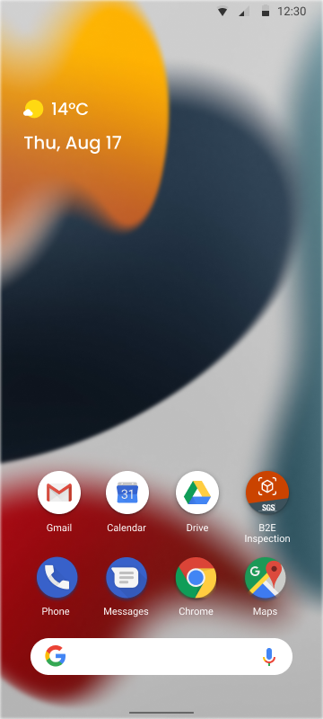
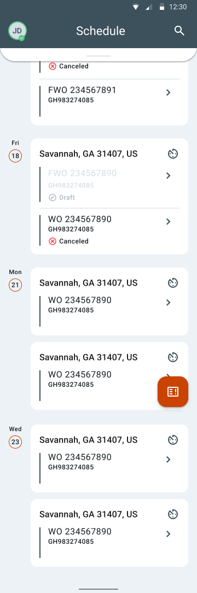
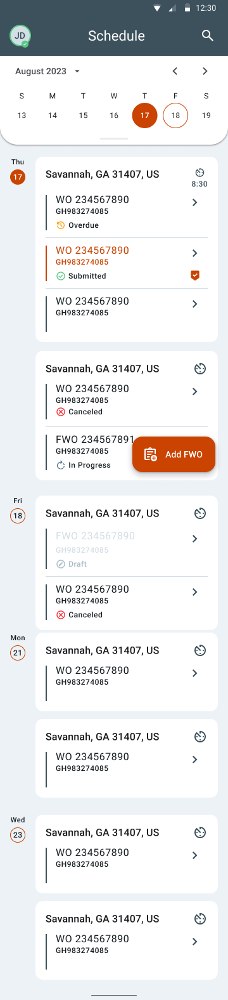
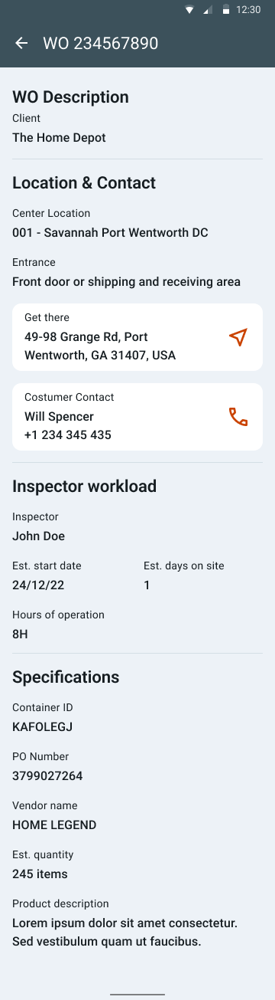
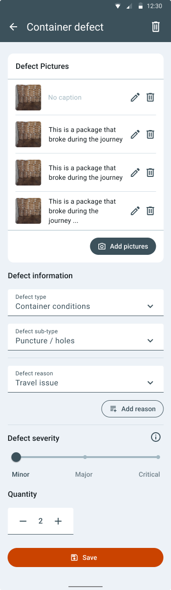

B2E Inspection Tool
01. The Challenge
The challenge of this MVP is to create a desktop and mobile inspection tracking platform (Inbound, Outbound and Delivery Process) to help its clients reduce return costs (regarding damaged products and boxes in the supply chain).
For this purpose, SGS has launched an MVP of a B2E Inspection Tool solution for 1 country (USA) and 1 client to make delivery process more reliable. SGS business strategy highlights three main purposes:
- We need to define a customizable and scalable product that can be tailored to the different business-specific cities as well as geographies.
- The solution needs to work as fast as the supply chain works.
- The data acquisition needs to be very fast in the field.
02. How we did it?
Discover & Design key Phases
NOV — DEC
| Task | Phase | Approximate timing |
|---|---|---|
| Desk-Research & Benchmark | Discover | Week of Nov 28 |
| User-journey and User-flow | Discover | Week of Nov 28 |
| Shadowing & Interviews (US) | Discover | Week of Dec 5 |
| Wireframes Iteration/Validation | Design | Dec 5 – Dec 16 |
| High Fidelity Mock-ups | Design | Week of Dec 16 |
| Interactive Prototype | Design | Week of Dec 19, final delivery |
03. The work
The research.
2
Shadowing
Day 1. Transload facility with Inspector and logistics managers
Day 2. Distribution Center with Inspector and warehouse managers
3
Stakeholders interviewed
Inspector · Supervisor · Customer
4
Weeks iterative cycle
From first wireframes to interactive prototype, testing and refining with each round
What did we learn?
Areas of
improvement
The summary of the research, interviews and the shadowing led us to define improvement points that will help us design the app in an efficient and user-centered way.
- The unexpectance of the field
- Many things to be aware of
- Boxes move fast around
- Keep the purpose in mind
- Inspect without intervene
- Act then think
- Make sure it is reliable
- Move with the flow of actions
- Avoid after-works hours
- Overcome the lack of data
- Reduce the decision making alternatives
Benchmark.
Benchmark is a strategic analysis of the best practices carried out in the market. An essential management tool for the improvement of processes, products and services.
- 1.Project management & scheduling
- 2.Scan, photo, video record
- 3.Form filling & note taking
- 4.Tracking & monitoring
Design principles
through insights.
1.System interconnectivity
3.Design for the future
5.Prepare for the unexpected
2.Build for professionals
4.Adapt to the speed of the real world events
6.Everything has meaning, everything has a purpose
The prototype





Having all assigned SGS work orders in one place — no more juggling multiple schedules or losing track of work orders.